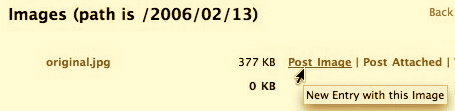
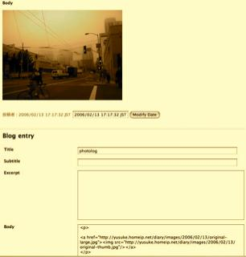
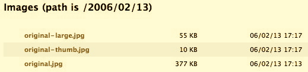

先週の研究成果を元にまた Pebble を改造してみた。
使い方は簡単、ファイル管理画面で画像エントリを作成したいイメージに対して"Post Image"をクリックするだけ。
画像が320x320以上のサイズであれば比率を保ったまま320x320に収まるサムネイルを作成の上、リンクを含んだドラフトエントリを作ってくれる。
複数の画像を含めたい場合は同じ操作を繰り返せばOk。同じドラフトエントリにじゃんじゃか画像を追加してくれます。
また、指定した画像が800x600以上のサイズの場合は比率を保ったまま800x600に収まるサイズの画像を作成し、サムネイルのリンク先となる。
これは拡大イメージが画面からはみ出すのを防ぐため。
とりあえず 320x320、とか800x600、はハードコードされてる。
320x320 以上のサムネイル、または800x600 以上の拡大画像を使いたい場合はそれぞれファイル名を"-thumb.jpg"、"-large.jpg"としておけばOk。
上書き生成はしないようになっているので。
ダウンロードはこちらから。

1. 画像の横にある"Post Image"をクリック

2. 画像付きのドラフトエントリが作成される

3. 自動的に800x600に収まる[オリジナルファイル名-large.jpg]、320x320に収まる[オリジナルファイル名-thumb.jpg]が作成されてる
実際にサムネイル作成をまかせたのがこれ↓
拡大画像にちょっとjpgのノイズが見えるけど、十分でしょう。
どうも画像貼り付け機能は昔からないらしい。
Pebble JP - Pebble1.6.1 - 1.6.2
MovableTypeでは普通に出来てたし、かなり基本的な機能だと思うんだけどなぜか改善要望も見あたらない。
見つからないだけで duplicate になるかもしれないけど投稿しておきました。
PEB-307: ease of posting photologs
追記:06/02/14 15:23
拡大画像が存在しないのにリンクを張ることがあったのを修正。
MacとJavaと映画と
最近のエントリー
最近のレスポンス
Re: ホームシアター建設記 - BRAVIA購入！
だいたい２ｍくらいでしょうか？ 大迫力ですよー
だいたい２ｍくらいでしょうか？ 大迫力ですよー
| 2月 2006 | ||||||
| 日 | 月 | 火 | 水 | 木 | 金 | 土 |
| 1 | 2 | 3 | 4 | |||
| 5 | 6 | 7 | 8 | 9 | 10 | 11 |
| 12 | 13 | 14 | 15 | 16 | 17 | 18 |
| 19 | 20 | 21 | 22 | 23 | 24 | 25 |
| 26 | 27 | 28 | ||||
| 1 | 今日 | 3 | ||||||


{kind=link}
{kind=link}
そですね、本家の方見てもSimon当人によるアップデートはチラホラって程度ですね。若干反応はあるので生きてはいるみたいですが^^;
日付変更、画像縮小、じゃんじゃんもっていってください！
投稿者 裕介 : 2006/02/14 14:16:36 JST
ありがとうございます。
またちょくちょくと寄らせていただきます。
投稿者 Tetsu : 2006/02/14 19:47:15 JST
あ、気に入った改造があれば是非Jiraの方で投票してやってくださいませ。
投稿者 裕介 : 2006/02/15 2:35:46 JST
トラックバックURL http://yusuke.homeip.net/diary/.action?entry=1139850385000
画像縮小と日付変更、私も欲しい機能でした。参考にさせていただいても良いですか？？
ちなみにPebble自体の開発はあまり進んでないようですね。